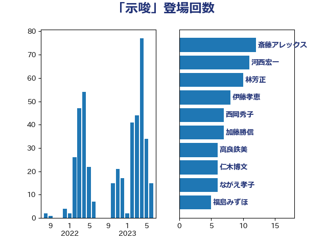

単語「示唆」

| 斎藤アレックス | 国民民主党 | 12 回 |
| 河西宏一 | 公明党 | 11 回 |
| 林芳正 | 自由民主党 | 10 回 |
| 伊藤孝恵 | 国民民主党 | 8 回 |
| 西岡秀子 | 国民民主党 | 7 回 |
| 加藤勝信 | 自由民主党 | 7 回 |
| 高良鉄美 | 無所属 | 6 回 |
| 仁木博文 | 無所属 | 6 回 |
| ながえ孝子 | 無所属 | 6 回 |
| 福島みずほ | 社会民主党 | 5 回 |
| 後藤茂之 | 自由民主党 | 5 回 |
| 小倉將信 | 自由民主党 | 5 回 |
| 大石あきこ | れいわ新選組 | 5 回 |
| 吉良よし子 | 日本共産党 | 5 回 |
| 緒方林太郎 | 無所属 | 4 回 |
| 松原仁 | 立憲民主党 | 4 回 |
| 打越さく良 | 立憲民主党 | 4 回 |
| 山際大志郎 | 自由民主党 | 4 回 |
| 天畠大輔 | れいわ新選組 | 4 回 |
| 堀場幸子 | 日本維新の会 | 4 回 |
| 高橋光男 | 公明党 | 3 回 |
| 高木真理 | 立憲民主党 | 3 回 |
| 高市早苗 | 自由民主党 | 3 回 |
| 音喜多駿 | 日本維新の会 | 3 回 |
| 青柳仁士 | 日本維新の会 | 3 回 |
| 鈴木義弘 | 国民民主党 | 3 回 |
| 野村哲郎 | 自由民主党 | 3 回 |
| 足立康史 | 日本維新の会 | 3 回 |
| 若宮健嗣 | 自由民主党 | 3 回 |
| 福山哲郎 | 立憲民主党 | 3 回 |
| 田村貴昭 | 日本共産党 | 3 回 |
| 田村まみ | 国民民主党 | 3 回 |
| 津島淳 | 自由民主党 | 3 回 |
| 森本真治 | 立憲民主党 | 3 回 |
| 梅村聡 | 日本維新の会 | 3 回 |
| 柳ヶ瀬裕文 | 日本維新の会 | 3 回 |
| 平木大作 | 公明党 | 3 回 |
| 川合孝典 | 国民民主党 | 3 回 |
| 山崎正恭 | 公明党 | 3 回 |
| 小沼巧 | 立憲民主党 | 3 回 |
| 小林鷹之 | 自由民主党 | 3 回 |
| 寺田学 | 立憲民主党 | 3 回 |
| 安江伸夫 | 公明党 | 3 回 |
| 堀井巌 | 自由民主党 | 3 回 |
| 上月良祐 | 自由民主党 | 3 回 |
| 鈴木敦 | 国民民主党 | 2 回 |
| 鈴木俊一 | 自由民主党 | 2 回 |
| 輿水恵一 | 公明党 | 2 回 |
| 西村明宏 | 自由民主党 | 2 回 |
| 藤井一博 | 自由民主党 | 2 回 |
| 篠原豪 | 立憲民主党 | 2 回 |
| 石井苗子 | 日本維新の会 | 2 回 |
| 田村智子 | 日本共産党 | 2 回 |
| 猪口邦子 | 自由民主党 | 2 回 |
| 牧山ひろえ | 立憲民主党 | 2 回 |
| 浜田聡 | NHK党 | 2 回 |
| 浜口誠 | 国民民主党 | 2 回 |
| 浅田均 | 日本維新の会 | 2 回 |
| 河野義博 | 公明党 | 2 回 |
| 梅谷守 | 立憲民主党 | 2 回 |
| 柴田巧 | 日本維新の会 | 2 回 |
| 柴愼一 | 立憲民主党 | 2 回 |
| 杉久武 | 公明党 | 2 回 |
| 本村伸子 | 日本共産党 | 2 回 |
| 末松信介 | 自由民主党 | 2 回 |
| 庄子賢一 | 公明党 | 2 回 |
| 川田龍平 | 立憲民主党 | 2 回 |
| 山添拓 | 日本共産党 | 2 回 |
| 山下芳生 | 日本共産党 | 2 回 |
| 守島正 | 日本維新の会 | 2 回 |
| 吉田統彦 | 立憲民主党 | 2 回 |
| 北神圭朗 | 無所属 | 2 回 |
| 佐々木さやか | 公明党 | 2 回 |
| 中田宏 | 自由民主党 | 2 回 |
| 鬼木誠 | 立憲民主党 | 1 回 |
| 高見康裕 | 自由民主党 | 1 回 |
| 高橋千鶴子 | 日本共産党 | 1 回 |
| 高木啓 | 自由民主党 | 1 回 |
| 青柳陽一郎 | 立憲民主党 | 1 回 |
| 青山周平 | 自由民主党 | 1 回 |
| 阿部知子 | 立憲民主党 | 1 回 |
| 長妻昭 | 立憲民主党 | 1 回 |
| 長友慎治 | 国民民主党 | 1 回 |
| 鈴木貴子 | 自由民主党 | 1 回 |
| 鈴木英敬 | 自由民主党 | 1 回 |
| 鈴木庸介 | 立憲民主党 | 1 回 |
| 金子恭之 | 自由民主党 | 1 回 |
| 野田聖子 | 自由民主党 | 1 回 |
| 赤木正幸 | 日本維新の会 | 1 回 |
| 谷合正明 | 公明党 | 1 回 |
| 藤岡隆雄 | 立憲民主党 | 1 回 |
| 落合貴之 | 立憲民主党 | 1 回 |
| 紙智子 | 日本共産党 | 1 回 |
| 簗和生 | 自由民主党 | 1 回 |
| 篠原孝 | 立憲民主党 | 1 回 |
| 笠井亮 | 日本共産党 | 1 回 |
| 竹詰仁 | 国民民主党 | 1 回 |
| 竹内譲 | 公明党 | 1 回 |
| 福重隆浩 | 公明党 | 1 回 |
| 福島伸享 | 無所属 | 1 回 |
| 神谷政幸 | 自由民主党 | 1 回 |
| 石井章 | 日本維新の会 | 1 回 |
| 矢倉克夫 | 公明党 | 1 回 |
| 畦元将吾 | 自由民主党 | 1 回 |
| 田島麻衣子 | 立憲民主党 | 1 回 |
| 田中健 | 国民民主党 | 1 回 |
| 玉木雄一郎 | 国民民主党 | 1 回 |
| 牧島かれん | 自由民主党 | 1 回 |
| 熊谷裕人 | 立憲民主党 | 1 回 |
| 渡辺孝一 | 自由民主党 | 1 回 |
| 浜野喜史 | 国民民主党 | 1 回 |
| 浅野哲 | 国民民主党 | 1 回 |
| 泉健太 | 立憲民主党 | 1 回 |
| 横山信一 | 公明党 | 1 回 |
| 榛葉賀津也 | 国民民主党 | 1 回 |
| 森山浩行 | 立憲民主党 | 1 回 |
| 柚木道義 | 立憲民主党 | 1 回 |
| 松本剛明 | 自由民主党 | 1 回 |
| 松木けんこう | 立憲民主党 | 1 回 |
| 松川るい | 自由民主党 | 1 回 |
| 末松義規 | 立憲民主党 | 1 回 |
| 木原誠二 | 自由民主党 | 1 回 |
| 斎藤嘉隆 | 立憲民主党 | 1 回 |
| 掘井健智 | 日本維新の会 | 1 回 |
| 岩谷良平 | 日本維新の会 | 1 回 |
| 山田太郎 | 自由民主党 | 1 回 |
| 山本香苗 | 公明党 | 1 回 |
| 山本博司 | 公明党 | 1 回 |
| 山本佐知子 | 自由民主党 | 1 回 |
| 山岸一生 | 立憲民主党 | 1 回 |
| 山井和則 | 立憲民主党 | 1 回 |
| 小野泰輔 | 日本維新の会 | 1 回 |
| 小沢雅仁 | 立憲民主党 | 1 回 |
| 小山展弘 | 立憲民主党 | 1 回 |
| 宮本徹 | 日本共産党 | 1 回 |
| 奥野総一郎 | 立憲民主党 | 1 回 |
| 太田房江 | 自由民主党 | 1 回 |
| 大串博志 | 立憲民主党 | 1 回 |
| 堤かなめ | 立憲民主党 | 1 回 |
| 嘉田由紀子 | 無所属 | 1 回 |
| 吉田宣弘 | 公明党 | 1 回 |
| 吉田久美子 | 公明党 | 1 回 |
| 吉田はるみ | 立憲民主党 | 1 回 |
| 吉川元 | 立憲民主党 | 1 回 |
| 古賀千景 | 立憲民主党 | 1 回 |
| 古川康 | 自由民主党 | 1 回 |
| 勝部賢志 | 立憲民主党 | 1 回 |
| 務台俊介 | 自由民主党 | 1 回 |
| 前川清成 | 日本維新の会 | 1 回 |
| 前原誠司 | 国民民主党 | 1 回 |
| 住吉寛紀 | 日本維新の会 | 1 回 |
| 伊藤渉 | 公明党 | 1 回 |
| 伊藤岳 | 日本共産党 | 1 回 |
| 今井絵理子 | 自由民主党 | 1 回 |
| 仁比聡平 | 日本共産党 | 1 回 |
| 井上哲士 | 日本共産党 | 1 回 |
| 中川正春 | 立憲民主党 | 1 回 |
| 中川宏昌 | 公明党 | 1 回 |
| 三谷英弘 | 自由民主党 | 1 回 |
| 三木圭恵 | 日本維新の会 | 1 回 |